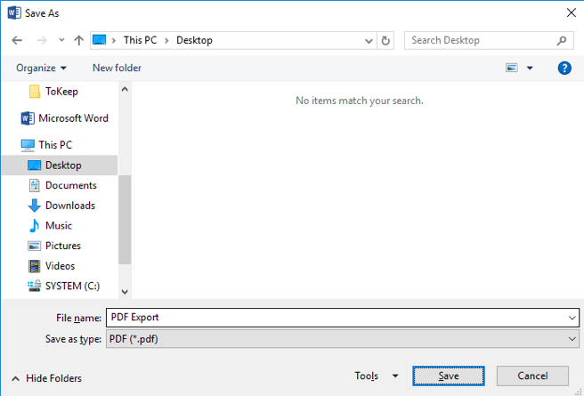
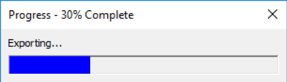

I recently developed a VBA macro for Microsoft Outlook 2016 that would allow a user to export one or more emails, and their attachments, to a single consolidated PDF document.
I wrote the macro because no third-party offering appeared to provide this capability. Adobe Acrobat provides similar functionality, but attachments, instead of being “expanded”, are embedded as links within the generated PDF.
There are two core components to the solution:
- A module named Export. This code is responsible for exporting and merging emails and attachments.
- A user form named ProgressBox. This code provides a standalone progress dialog that is utilised by the Export module.
Note: If you intend to recreate this solution using the code shown below, the ProgressBox user form requires the ShowModal property to be set to False. You will also need to add the following VBA references to the macro:
- Microsoft Office 16.0 Object Library
- Microsoft Word 16.0 Object Library
- Microsoft Excel 16.0 Object Library
- Microsoft Scripting Runtime
- Microsoft VBScript Regular Expressions 5.5
- Microsoft Forms 2.0 Object Library
- Adobe Acrobat 10.0 Type Library
The operation of the macro is relatively straightforward. The macro entry point is a method named ExportToPdf. This method performs the following high-level tasks:
- Checks that a user has selected one or more emails. The macro exits with a warning message if no email has been selected.
- Prompts the user to set the path to where the generated PDF is to be saved. The macro will exit if no path is selected.
- Iterates through each selected email, saving the email, and each of the email’s attachments to the file system. Each email is saved as a Microsoft Word document, while each attachment is saved in its native format.
- Note: Only whitelisted attachments are processed (all non-approved file attachment types are ignored).
- If an attachment is an Excel workbook, each of the worksheets within the workbook are copied and pasted into a new Word document, which is then saved as a PDF.
- If an attachment is an Outlook message, the attachment is processed recursively (i.e. attachments within the attached email are also processed).
- The code then iterates through each of the saved documents, converting each to PDF format using Word. Note: If the document is an image, the image is pasted into a new Word document as an inline image, dynamically resized to avoid border-clipping, and then saved as a PDF.
- Finally, each of the PDF documents are merged into a single consolidated PDF using Adobe Acrobat DC.
- Each document is deleted after it is processed.
The following attachment file types are supported:
- Word documents: doc, docx, docm, dot, dotm, dotx
- Excel documents: xls, xlsx, xlsm, xlt, xltm, xltx
- Images: jpg, jpeg, png, gif, bmp, tif, tiff
- Outlook emails: msg
- Other: txt, pdf
The code is dependent on the installation of Microsoft Office 2016 and Adobe Acrobat DC. Earlier versions of Office would also work, but the library references would need to be changed accordingly.
The first iteration of this solution did not have a dependency on Adobe Acrobat DC, as the document merging process was managed in Word, and the resultant document was saved as a PDF. However, after further testing, it was discovered that this process did not always work, as some PDF documents could not be opened by Word. Hence, the code was rewritten to save all documents as PDFs using Word, with Acrobat used to merge the documents into a consolidated PDF. This process is more complicated to implement, and adds a dependency on Acrobat, but in theory, it is a better solution, as under the original solution, PDF attachments were double-handled (converted to Word, and then back to PDF).
This is the code for the Export module:
' Purpose: Save selected emails, and their attachments, to a PDF.
Private Declare Sub Sleep Lib "kernel32" (ByVal dwMilliseconds As Long)
Private Declare Function CoAllowSetForegroundWindow Lib "ole32.dll" (ByVal pUnk As Object, ByVal lpvReserved As Long) As Long
Dim Namespace As Namespace
Dim FileSystemObject As FileSystemObject
Dim SelectedEmails As Selection
Dim SavedFiles As Collection
Dim FilesToMerge As Collection
Dim WordApp As Word.Application
Dim ExcelApp As Excel.Application
' Regular expressions defining the attachments that will be processed.
' All other attachments will be ignored.
Const ExcelExtensionsRegExp = "^(xl(s|sx|sm|t|tm|tx))$"
Const ImageExtensionsRegExp = "^(jpg|jepg|png|gif|bmp|tiff?)$"
Const OtherExtensionsRegExp = "^(do(c|cx|cm|t|tm|tx)|pdf|txt)$"
Const MessageExtensionsRegExp = "^(msg)$"
Sub ExportToPdf()
' Exit if the user has not selected at least one email.
If (Outlook.ActiveExplorer.Selection.Count = 0) Then
MsgBox "Please select one or more emails.", vbInformation + vbOKOnly
Exit Sub
End If
Set Namespace = Application.GetNamespace("MAPI")
Set FileSystemObject = CreateObject("Scripting.FileSystemObject")
Set SelectedEmails = Outlook.ActiveExplorer.Selection
Set SavedFiles = New Collection
Set FilesToMerge = New Collection
Set WordApp = New Word.Application
WordApp.Visible = False
' Allow Word to take focus. Required to ensure the Save As dialog comes to the foreground.
CoAllowSetForegroundWindow WordApp, 0
' Backup the "warn before saving" option.
WarnBeforeSaveOption = WordApp.Options.WarnBeforeSavingPrintingSendingMarkup
' Disable the option.
WordApp.Options.WarnBeforeSavingPrintingSendingMarkup = False
Set ExcelApp = Nothing
' The path where the generated PDF will be saved.
PdfPath = GetPdfPath
' Exit if no path is specified for saving the PDF.
' This will occur if the user closes the 'File Save As' dialog without providing a valid path.
If PdfPath = "" Then
' Word is used to display the 'File Save As' dialog.
' Close Word before exiting.
WordApp.Quit
Exit Sub
End If
' The path to the folder where all temporary documents, and the final PDF, will be saved.
SavePath = Left(PdfPath, InStrRev(PdfPath, "\"))
' Initialise the progress bar component.
ProgressBox.Show
ProgressBox.Increment 0, "Exporting..."
' Save the selected emails, and their attachments, to the file system.
SaveEmails SelectedEmails, SavePath
' Convert each of the saved files to PDF documents.
ConvertDocumentsToPdf
' Merge the PDF documents into a single PDF document.
MergePdfDocuments PdfPath
' Indicate the export is complete.
ProgressBox.Increment 100, "Complete!"
' Show the completion dialog for 1 second.
Sleep 1000
ProgressBox.Hide
' Reinstate the old "warn before save" option.
WordApp.Options.WarnBeforeSavingPrintingSendingMarkup = WarnBeforeSaveOption
' Close Word (and Excel, if it was used to process attachments).
WordApp.Quit
If Not (ExcelApp Is Nothing) Then
ExcelApp.DisplayAlerts = True
ExcelApp.Quit
End If
' Clean up.
Set SavedFiles = Nothing
Set FilesToMerge = Nothing
Set SelectedEmails = Nothing
Set FileSystemObject = Nothing
Set Namespace = Nothing
End Sub
Function GetPdfPath()
' The easiest way to retrieve a file save path is via the GetSaveAsFilename method in Excel.
' Unfortunately, this method isn't available in Word.
' As this macro always requires Word, but only requires Excel when exporting an Excel attachment,
' it makes sense to avoid using Excel to retrieve the file save path.
' Hence we use the (slightly more convoluted) FileDialog method.
Set Dialog = WordApp.FileDialog(msoFileDialogSaveAs)
With Dialog
.InitialFileName = Environ("USERPROFILE") & "\"
.FilterIndex = 7 ' *.pdf - the 7th option in the drop down list box of file formats.
.Title = "Save As"
If .Show <> 0 Then
GetPdfPath = .SelectedItems(1)
Else
GetPdfPath = ""
End If
End With
End Function
Private Sub SaveEmails(SelectedEmails, SavePath)
' Used to update the progress bar.
Counter = 0
' Iterate through each of the selected emails.
For Each SelectedEmail In SelectedEmails
' Update the progress indicator (pausing each time for 250ms to ensure the progression is noticeable).
ProgressBox.Increment (Counter / SelectedEmails.Count) * 100, "Exporting..."
Sleep 250
' Retrieve the details of the current email.
EntryID = SelectedEmail.EntryID
Set Email = Namespace.GetItemFromID(EntryID)
SaveEmail Email, SavePath
' Increment the counter that is used to update the progress indicator.
Counter = Counter + 1
Set Email = Nothing
Next SelectedEmail
End Sub
Private Sub SaveEmail(Email, SavePath)
' The full path used for saving the email to the file system.
' The document name is based on the time the email was received.
Path = SavePath & (Int(Rnd * 100000)) & Format(Email.CreationTime, "yyyyMMddhhmmss") & ".doc"
' Delete any previous copy of the email from the file system.
' This is only necessary if the email was previously exported, but not properly cleaned up (e.g. the previous export failed).
If FileSystemObject.FileExists(Path) Then
FileSystemObject.DeleteFile Path
End If
' Record (in a collection named SaveFiles) the path to the saved email.
' This collection will be subsequently used to retrieve a list of the files that need to be merged.
SavedFiles.Add Path
' Save the email to the file system.
Email.SaveAs Path, olDoc
' Resize images in the email.
Set Document = WordApp.Documents.Open(FileName:=Path, Visible:=False)
If Document.InlineShapes.Count > 0 Then
ResizeImages Document
End If
Document.SaveAs2 Path, wdFormatXMLDocument
Document.Close wdDoNotSaveChanges, wdOriginalDocumentFormat, False
' The following block is only executed if the email includes attachments.
If Email.Attachments.Count > 0 Then
' Iterate through all attachments.
For Each Attachment In Email.Attachments
' Extract the extension of each attachment.
Extension = GetFileExtension(Attachment.FileName)
' Inline images are saved with the email, and do not need to be processed as separate attachments.
If IsEmbeddedAttachment(Attachment) And IsImage(Extension) Then
GoTo NextIteration
End If
' Only attachments matching the whitelist of approved types are processed.
If IsValidAttachment(Extension) Then
' The attachment is saved to the file system (using the attachment file name).
AttachmentPath = Truncate(SavePath & (Int(Rnd * 100000)) & Attachment.FileName)
Attachment.SaveAsFile AttachmentPath
' Additional processing is applied to Excel attachments.
If IsExcelDocument(Extension) Then
' Start Excel if it isn't already running (i.e. this is the first Excel attachment).
If ExcelApp Is Nothing Then
Set ExcelApp = New Excel.Application
ExcelApp.Visible = False
ExcelApp.DisplayAlerts = False
End If
' The path to the new Word document that will be used for storing the content within the Excel document.
FilePath = Truncate(GetBaseFilePath(AttachmentPath) & (Int(Rnd * 100000)) & ".docx")
' Create a new blank Word document.
Set TempDocument = WordApp.Documents.Add("Normal", False, wdNewBlankDocument, False)
' Open the Excel document.
Set Workbook = ExcelApp.Workbooks.Open(AttachmentPath)
' Iterate through all worksheets in the Excel document.
For Each Worksheet In Workbook.Worksheets
' Copy the content within the worksheet.
Worksheet.UsedRange.Copy
' Add a new section to the target Word document.
Set Section = TempDocument.Sections.Add
' Paste the copied content into the Word document.
Section.Range.PasteAndFormat wdFormatOriginalFormatting
Next Worksheet
' Delete the first section of the temporary Word document.
' This removes the blank page that is created at the beginning of the document when the first section is added.
TempDocument.Sections.Item(1).Range.Delete wdCharacter, 1
' Save the temporary Word document.
TempDocument.SaveAs2 FilePath, wdFormatXMLDocument
TempDocument.Close wdDoNotSaveChanges, wdOriginalDocumentFormat, False
' Close and then delete the Excel document.
Workbook.Close False
Kill AttachmentPath
' The attachment path is no longer the path to the saved Excel document;
' it's now the path to the Word document into which the Excel content was copied.
AttachmentPath = FilePath
ElseIf IsEmailMsg(Extension) Then
' Attachment is an Msg.
Set Msg = Application.CreateItemFromTemplate(AttachmentPath)
SaveEmail Msg, SavePath
Kill AttachmentPath
GoTo NextIteration
End If
' Record the path to the saved attachment.
SavedFiles.Add AttachmentPath
End If
NextIteration:
Next Attachment
End If
End Sub
'Helper function to ensure path lengths are unique and don't exceed 250 characters.
Function Truncate(Path)
' Maximum number of characters in a file path.
MaxPathLength = 250
' Length of current path.
PathLength = Len(Path)
If PathLength > MaxPathLength Then
Extension = GetFileExtension(Path)
' Truncate base file path such that when the extension is re-added, the max path length is not exceeded.
Truncate = Left(GetBaseFilePath(Path), MaxPathLength - Len(Extension) + 1) & "." & Extension
Else
Truncate = Path
End If
End Function
' Helper function to retrieve the extension of a file. e.g. FooBar.pdf = pdf
Function GetFileExtension(FileName)
GetFileExtension = LCase(FileSystemObject.GetExtensionName(FileName))
End Function
' Helper function to check if an attachment is embedded (OLE) within an email.
' We typically want to ignore embedded attachments as they are automatically included when an email is saved.
Function IsEmbeddedAttachment(Attachment)
Set PropertyAccessor = Attachment.PropertyAccessor
Property = PropertyAccessor.GetProperty("http://schemas.microsoft.com/mapi/proptag/0x3712001E")
IsEmbeddedAttachment = InStr(1, Property, "@")
End Function
' Helper function to check if a string (subject) matches a regular expression pattern.
Function TestRegExp(Subject, Pattern)
Set RegExp = New RegExp
With RegExp
.Global = True
.IgnoreCase = True
.Pattern = Pattern
End With
TestRegExp = RegExp.Test(Subject)
End Function
' Helper function to check if an attachment is an image (based on file extension).
Function IsImage(Extension)
IsImage = TestRegExp(Extension, ImageExtensionsRegExp)
End Function
' Helper function to check if an attachment is an Excel document (based on file extension).
Function IsExcelDocument(Extension)
IsExcelDocument = TestRegExp(Extension, ExcelExtensionsRegExp)
End Function
' Helper function to check if an attachment is an Outlook email (based on file extension).
Function IsEmailMsg(Extension)
IsEmailMsg = TestRegExp(Extension, MessageExtensionsRegExp)
End Function
' Helper function to check if an attachment, other than an image or Excel document, is whitelisted (based on file extension).
Function IsOtherValidDocument(Extension)
IsOtherValidDocument = TestRegExp(Extension, OtherExtensionsRegExp)
End Function
' Helper function to check if an attachment is a PDF (based on file extension).
Function IsPdfDocument(Path)
IsPdfDocument = TestRegExp(Path, "\.pdf$")
End Function
' Helper function to check if an attachment is whitelisted (based on file extension).
Function IsValidAttachment(Extension)
IsValidAttachment = IsImage(Extension) Or IsExcelDocument(Extension) Or IsEmailMsg(Extension) Or IsOtherValidDocument(Extension)
End Function
' Helper function to get the path to a file without the file's extension.
Function GetBaseFilePath(Path)
Extension = "." & GetFileExtension(Path)
GetBaseFilePath = Replace(Path, Extension, "")
End Function
' Used to convert all emails and their associated attachments to PDF documents.
Private Sub ConvertDocumentsToPdf()
' Initialise the progress bar component.
' This resets the progress bar after saving emails and attachments to the file system.
ProgressBox.Increment 0, "Converting..."
Counter = 0
' Iterate through the emails and attachments that were saved to the file system.
For Each SavedFile In SavedFiles
ProgressBox.Increment (Counter / SavedFiles.Count) * 100, "Converting..."
Sleep 250
' No processing required for native PDF document.
If IsPdfDocument(SavedFile) Then
FilesToMerge.Add SavedFile
Else
NewPdfPath = GetBaseFilePath(SavedFile) & ".pdf"
' Check if the saved document is an image.
If IsImage(GetFileExtension(SavedFile)) Then
' Create a new blank Word document.
Set Document = WordApp.Documents.Add("Normal", False, wdNewBlankDocument, False)
' Insert the image as a shape into the new consolidated document.
InsertImage SavedFile, Document
Else
' Open the document in Word.
Set Document = WordApp.Documents.Open(FileName:=SavedFile, Visible:=False)
End If
' Save the Word document as a PDF.
Document.SaveAs2 NewPdfPath, wdFormatPDF
' Close Word.
Document.Close wdDoNotSaveChanges, wdOriginalDocumentFormat, False
' Store the path to the collection of PDF documents to be merged.
FilesToMerge.Add NewPdfPath
' Delete the saved document after it has been converted to a PDF.
Kill SavedFile
End If
Counter = Counter + 1
Next SavedFile
End Sub
' Resize inline images so that they don't extend beyond the borders of the page.
Sub ResizeImages(Document)
' Get page dimensions. Give some wiggle room.
PageHeight = Document.PageSetup.PageHeight - (Document.PageSetup.TopMargin + Document.PageSetup.BottomMargin + 50)
PageWidth = Document.PageSetup.PageWidth - (Document.PageSetup.LeftMargin + Document.PageSetup.RightMargin + Document.PageSetup.Gutter + 50)
For i = 1 To Document.InlineShapes.Count
' Check if the current shape is a picture.
If Document.InlineShapes.Item(i).Type = wdInlineShapePicture Or Document.InlineShapes.Item(i).Type = wdInlineShapeLinkedPicture Then
Set Shape = Document.InlineShapes.Item(i)
Shape.Range.Select
Shape.LockAspectRatio = msoFalse
' Constrain the shape dimensions to fit within the page.
If (Shape.Width > PageWidth) Then
If ((PageWidth / Shape.Width) * Shape.Height > PageHeight) Then
Shape.Width = PageHeight / Shape.Height * PageWidth
Shape.Height = PageHeight
Else
Shape.Width = PageWidth
Shape.Height = (PageWidth / Shape.Width) * Shape.Height
End If
ElseIf (Shape.Height > PageHeight) Then
Shape.Width = PageHeight / Shape.Height * Shape.Width
Shape.Height = PageHeight
End If
Shape.LockAspectRatio = msoTrue
End If
Next i
End Sub
' Helper function to insert an image into a document.
Private Sub InsertImage(FileName, Document)
' Ensure the target document is active.
Document.Activate
' Insert the source image into the target document as an inline shape.
Set Shape = Document.Range.InlineShapes.AddPicture(FileName, LinkToFile:=False, SaveWithDocument:=True)
End Sub
' Merge multiple PDF documents into a single PDF.
Private Sub MergePdfDocuments(PdfPath)
'Set AcrobatApp = CreateObject("AcroExch.App")
Set DestinationPdf = CreateObject("AcroExch.PDDoc")
Set SourcePdf = CreateObject("AcroExch.PDDoc")
' Initialise the progress bar component.
' This resets the progress bar after converting documents to PDF.
ProgressBox.Increment 0, "Merging..."
Counter = 0
' We will merge PDFs into the first PDF.
DestinationPdfPath = FilesToMerge.Item(1)
DestinationPdf.Open DestinationPdfPath
FilesToMerge.Remove (1)
' Iterate through the emails and attachments that were saved to the file system.
For Each FileToMerge In FilesToMerge
ProgressBox.Increment (Counter / FilesToMerge.Count) * 100, "Merging..."
Sleep 250
' Open the source PDF.
SourcePdf.Open FileToMerge
' The page number within the destination PDF where content will be inserted.
LastPage = DestinationPdf.GetNumPages - 1
' The number of pages to insert.
NumberOfPagesToInsert = SourcePdf.GetNumPages
' Insert the content into the destination PDF.
DestinationPdf.InsertPages LastPage, SourcePdf, 0, NumberOfPagesToInsert, False
' Close and then delete the source PDF.
SourcePdf.Close
Kill FileToMerge
Counter = Counter + 1
Next FileToMerge
' Save the merged PDF and delete the original.
DestinationPdf.Save 1, PdfPath
Kill DestinationPdfPath
' Close the PDF document.
DestinationPdf.Close
End SubThis next block of code is for the user form named Progress. Note: This code, with only minor modification, was copied from the following article, and was originally written by Zack Barresse.
Private Const DefaultTitle = "Progress"
Private CurrentText As String
Private CurrentPercent As Single
Public Property Let Text(NewText As String)
If NewText <> CurrentText Then
CurrentText = NewText
Me.Controls("UserText").Caption = CurrentText
Call SizeToFit
End If
End Property
Public Property Get Text() As String
Text = CurrentText
End Property
Public Property Let Percent(NewPercent As Single)
If NewPercent <> CurrentPercent Then
CurrentPercent = Min(Max(NewPercent, 0#), 100#)
Call UpdateProgress
End If
End Property
Public Property Get Percent() As Single
Percent = CurrentPercent
End Property
Public Sub Increment(ByVal NewPercent As Single, Optional ByVal NewText As String)
Me.Percent = NewPercent
If NewText <> "" Then Me.Text = NewText
Call UpdateTitle
Me.Repaint
End Sub
Private Sub UserForm_Initialize()
Call SetupControls
Call UpdateTitle
End Sub
Private Sub UserForm_QueryClose(Cancel As Integer, CloseMode As Integer)
If CloseMode = vbFormControlMenu Then End 'Cancel = True
End Sub
Private Sub SetupControls()
Dim i As Integer
Dim Control As Object
For i = Me.Controls.Count To 1 Step -1
Me.Controls(i).Remove
Next i
Set Control = Me.Controls.Add("Forms.Label.1", "UserText", True)
Control.Caption = ""
Control.AutoSize = True
Control.WordWrap = True
Control.Font.Size = 8
Set Control = Me.Controls.Add("Forms.Label.1", "ProgressFrame", True)
Control.Caption = ""
Control.Height = 16
Control.SpecialEffect = fmSpecialEffectSunken
Set Control = Me.Controls.Add("Forms.Label.1", "ProgressBar", True)
Control.Caption = ""
Control.Height = 14
Control.BackStyle = fmBackStyleOpaque
Control.BackColor = &HFF0000 ' Blue
Call SizeToFit
End Sub
Private Sub SizeToFit()
Me.Width = 240
Me.Controls("UserText").Top = 6
Me.Controls("UserText").Left = 6
Me.Controls("UserText").AutoSize = False
Me.Controls("UserText").Font.Size = 8
Me.Controls("UserText").Width = Me.InsideWidth - 12
Me.Controls("UserText").AutoSize = True
Me.Controls("ProgressFrame").Top = Int(Me.Controls("UserText").Top + Me.Controls("UserText").Height) + 6
Me.Controls("ProgressFrame").Left = 6
Me.Controls("ProgressFrame").Width = Me.InsideWidth - 12
Me.Controls("ProgressBar").Top = Me.Controls("ProgressFrame").Top + 1
Me.Controls("ProgressBar").Left = Me.Controls("ProgressFrame").Left + 1
Call UpdateProgress
Me.Height = Me.Controls("ProgressFrame").Top + Me.Controls("ProgressFrame").Height + 6 + (Me.Height - Me.InsideHeight)
End Sub
Private Sub UpdateTitle()
Me.Caption = DefaultTitle & " - " & Format(Int(CurrentPercent), "0") & "% Complete"
End Sub
Private Sub UpdateProgress()
If CurrentPercent = 0 Then
Me.Controls("ProgressBar").Visible = False
Else
Me.Controls("ProgressBar").Visible = True
Me.Controls("ProgressBar").Width = Int((Me.Controls("ProgressFrame").Width - 2) * CurrentPercent / 100)
End If
End Sub
Function Min(number1 As Single, number2 As Single) As Single
If number1 < number2 Then Min = number1 Else Min = number2
End Function
Function Max(number1 As Single, number2 As Single) As Single
If number1 > number2 Then Max = number1 Else Max = number2
End FunctionAfter recreating the macro in Outlook, I recommend you create a suitably named button in the ribbon that can be used to run the ExportToPdf method.
To run the macro:
- Navigate to a mailbox folder that contains the emails you would like to export.
- Select every email you wish to export. The emails will be saved to a PDF document in the order in which they are selected. i.e. If you want the emails to be sorted in reverse chronological order, sort the folder so that the newest emails are at the top, and then select from top to bottom.
- Once the required emails are selected, click the "Export as PDF" button in the ribbon.
-
A dialog will be displayed asking you to provide the name (and path) to the location where the generated PDF document will be created. Browse to a suitable location and enter a suitable name, then click Save.

-
The macro will commence exporting and merging the selected emails and their attachments. A status dialog will appear to give an indication of progress. There are three stages to the process; an export phase, a conversion phase, and a merge phase. The progress of all stages will be displayed. When the third stage has finished, the dialog will say 100% Complete, and then close one second later.
